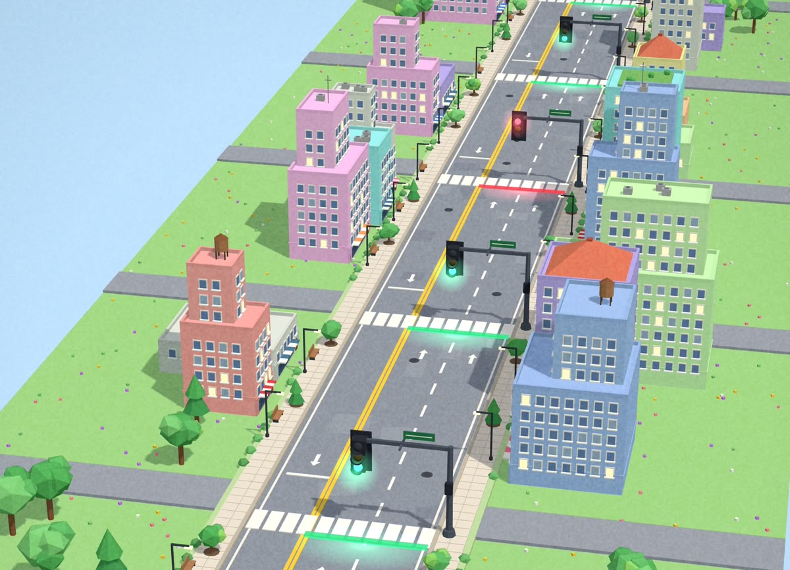
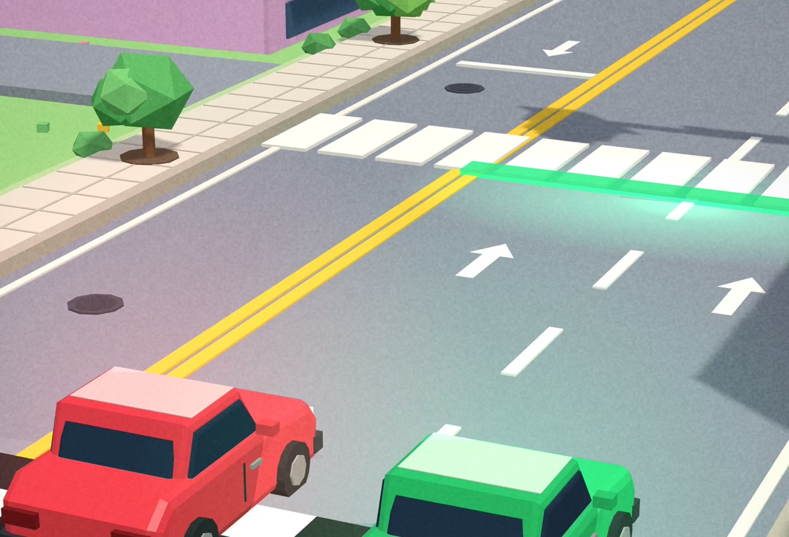
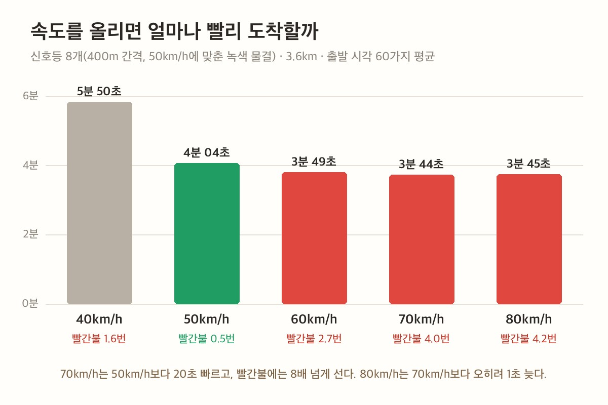

과속해도 왜 빨리 못 갈까 — 느린 차가 빠른 차를 이기는 길(녹색 물결 신호)
서두름의 값은 생각보다 싸다
초록불이 켜지는 순간, 옆 차선에서 엔진 소리가 터졌다. 으르릉. 검은 차 한 대가 튕겨 나가듯 앞으로 사라졌다.
나도 모르게 발에 힘이 들어갔다. 뒤처진 것 같았다. 아니, 실제로 뒤처졌다. 그 차의 미등은 금세 점이 되었고, 나는 평소 속도 그대로였다. 이상하게 지는 기분이 들었다.
그런데 두 번째 신호에서 빨간불에 걸려 섰을 때, 바로 옆에 그 검은 차가 서 있었다.
웃음이 났다. 저렇게 밟고 가서 결국 나랑 같은 자리네. 잠깐 통쾌했다. 그리고 곧 조금 민망해졌다. 방금 전까지 나도 따라 밟을까 망설였으니까.
신호가 바뀌자 그 차는 또 튀어 나갔다. 나는 다시 천천히 출발했다. 그리고 궁금해졌다. 그 차는 결국, 나보다 얼마나 먼저 도착했을까.
· · ·
신호등 여덟 개짜리 경주
컴퓨터 속에 곧은 대로 하나를 깔았다. 400m마다 신호등이 있고, 모두 여덟 개다. 이 신호들은 녹색 물결(신호 연동)로 맞춰 두었다. 시속 50km로 달리는 차가 첫 초록불을 받으면, 다음 신호도, 그다음 신호도 도착할 때마다 초록불이 되도록 켜지는 시간을 조금씩 늦춘 것이다.

그리고 두 차를 같은 순간에 출발시켰다. 빨간 차는 시속 70km, 초록 차는 시속 50km. 출발 시각을 60가지로 바꿔 가며 평균을 냈다.
여기서 잠깐 골라 보자. 3.6km를 달려 결승선에 닿았을 때, 시속 70km 차는
- A. 1분 넘게 먼저 도착한다
- B. 20초쯤 먼저 도착한다
- C. 오히려 늦게 도착한다
나는 A라고 생각했다. 시속 20km나 빠르니까. 신호가 없다면 실제로 1분 넘게 빨라야 하는 거리다.

결과는 B였다. 빨간 차는 평균 3분 44초, 초록 차는 4분 04초. 차이는 겨우 20초였다.
빨간 차는 달리고, 서고, 또 달렸다. 빨간불에 평균 4번 섰다. 초록 차는 0.5번. 출발할 때 운 나쁘게 한 번 걸리는 정도였다. 단순한 계산식으로 따져 본 기름값은 빨간 차가 79% 더 들었다.
속도를 더 올려 봐도 마찬가지였다. 시속 80km로 달린 차는 시속 70km 차보다 오히려 1초 늦었다.

이유는 이랬다. 녹색 물결 위에서 빠른 차는 초록불을 앞질러 간다. 다음 신호에 너무 일찍 도착해서, 아직 켜지지 않은 초록불을 빨간불 앞에서 기다린다. 결국 빨리 달린 시간을 정지선에서 거의 다 돌려준다. 그 사이 초록 차는 한 번도 서지 않고 물결을 탄다. 브레이크도, 다시 밟는 가속도 없다.
신호를 이렇게 맞추는 방법은 1960년대 교통 공학자들이 정리했다. 그리고 하나 더 놀라운 점이 있었다. 같은 신호를 반대 방향으로 달리면 시속 50km 차도 평균 3.5번 선다. 400m 간격에서는 물결이 한쪽 방향에만 맞기 때문이다. 양쪽이 다 맞으려면 신호 간격이 625m여야 했다.
신호 간격과 속도를 바꿔 가며, 녹색 물결이 생기고 깨지는 순간을 직접 보자.
→ 녹색 물결 신호 실험, 직접 돌려 보기
· · ·
뛰어서 같은 열차를 타는 아침
이 장면은 도로 밖에서도 자주 본다.
환승역 계단. 열차 들어오는 소리가 들리면 사람들이 뛰기 시작한다. 나도 뛴다. 숨을 몰아쉬며 승강장에 닿으면, 문이 닫힌 열차가 막 떠나고 있다. 그리고 몇 분 뒤 다음 열차가 온다. 걸어서 내려온 사람도 같은 열차를 탄다.
열차에는 시간표가 있고, 신호에는 주기가 있다. 세상의 많은 일이 그렇게 자기 박자로 돌아간다. 내가 그 박자보다 빨리 도착하면, 아낀 시간은 기다림으로 바뀐다. 그 대신 숨이 차고, 땀이 나고, 마음이 조급해진다. 차로 치면 브레이크와 가속에 쓴 기름이다.
일도 비슷하다. 오전에 보고서를 서둘러 끝내 보내도, 결재하는 사람이 오후에 몰아서 본다면 그 서두름은 받은 편지함에서 기다린다. 서두르는 게 나쁘다는 말이 아니다. 서두르기 전에, 상대의 박자를 먼저 보면 된다.
· · ·
다음 날 아침, 같은 길에서 일부러 시속 50km를 지켜 봤다.
초록불이 하나 켜지고, 그다음이 켜지고, 또 그다음이 켜졌다. 나는 한 번도 브레이크를 밟지 않았다. 세 번째 신호쯤에서, 빨간불 앞에 서 있는 검은 차 한 대를 천천히 지나쳤다.
그날 나는 그 차보다 20초쯤 늦게 도착했을 것이다. 그런데 이상하게, 하나도 지는 기분이 아니었다.
여러분은 출퇴근길에 "밟아도 결국 같은 신호에서 만나는 차"를 본 적 있나요? 자주 다니는 길의 신호 이야기를 댓글로 들려주세요.
덧붙임. 글 속의 숫자는 사이트 시뮬레이션 모델 결과다(신호 8개, 간격 400m, 주기 90초·녹색 45초, 설계 속도 50km/h, 신호 앞뒤 200m 포함 3.6km, 차 한 대씩 따로 달리며 다른 차·회전 차량·보행 신호는 없음, 출발 시각 60가지 평균). 연료는 이 프로젝트의 단순한 계산식으로 낸 추정치이며 실제 차종의 연비가 아니다. 실제 도로에서 과속은 사고 위험과 단속 대상이라는 점도 함께 기억하자. 신호 연동의 고전 연구: J. D. C. Little (1966), "The Synchronization of Traffic Signals by Mixed-Integer Linear Programming", Operations Research 14(4). 그림은 직접 만든 3D 시뮬레이션 화면과 그래프이며, 글 정리에 AI(Claude)의 도움을 받았다.
— 시뮬라티오 랩, Lab장
이 이야기, 영상과 실험으로 더 보기
 🎬 롱폼 영상
🎬 롱폼 영상 📺 채널 구독
📺 채널 구독휴대폰 카메라로 QR을 비추면 바로 열려요 · 실험 80여 개는 simulatiolab.com
네이버 블로그로 옮기기
① 제목 → 제목 칸 ⌘V · ② 본문 → 본문 ⌘V (사진도 함께 붙어요. 안 붙으면 사진만 따로 올리기) · ③ 태그 → 발행 창 태그 칸 · ④ 카테고리 "왜 그럴까" · ⑤ 발행 뒤 네이버 주소를 content/06-greenwave.md 의 naver_url에 적기
🧪 직접 돌려 보기 · ▶ 쇼츠 영상 · 🎬 롱폼 영상 · 📺 채널 구독
초록불이 켜지는 순간, 옆 차선에서 엔진 소리가 터졌다. 으르릉. 검은 차 한 대가 튕겨 나가듯 앞으로 사라졌다.
나도 모르게 발에 힘이 들어갔다. 뒤처진 것 같았다. 아니, 실제로 뒤처졌다. 그 차의 미등은 금세 점이 되었고, 나는 평소 속도 그대로였다. 이상하게 지는 기분이 들었다.
그런데 두 번째 신호에서 빨간불에 걸려 섰을 때, 바로 옆에 그 검은 차가 서 있었다.
웃음이 났다. 저렇게 밟고 가서 결국 나랑 같은 자리네. 잠깐 통쾌했다. 그리고 곧 조금 민망해졌다. 방금 전까지 나도 따라 밟을까 망설였으니까.
신호가 바뀌자 그 차는 또 튀어 나갔다. 나는 다시 천천히 출발했다. 그리고 궁금해졌다. 그 차는 결국, 나보다 얼마나 먼저 도착했을까.
· · ·
신호등 여덟 개짜리 경주
컴퓨터 속에 곧은 대로 하나를 깔았다. 400m마다 신호등이 있고, 모두 여덟 개다. 이 신호들은 녹색 물결(신호 연동)로 맞춰 두었다. 시속 50km로 달리는 차가 첫 초록불을 받으면, 다음 신호도, 그다음 신호도 도착할 때마다 초록불이 되도록 켜지는 시간을 조금씩 늦춘 것이다.

신호등 여덟 개가 한 줄로 선 대로
그리고 두 차를 같은 순간에 출발시켰다. 빨간 차는 시속 70km, 초록 차는 시속 50km. 출발 시각을 60가지로 바꿔 가며 평균을 냈다.
여기서 잠깐 골라 보자. 3.6km를 달려 결승선에 닿았을 때, 시속 70km 차는
- A. 1분 넘게 먼저 도착한다
- B. 20초쯤 먼저 도착한다
- C. 오히려 늦게 도착한다
나는 A라고 생각했다. 시속 20km나 빠르니까. 신호가 없다면 실제로 1분 넘게 빨라야 하는 거리다.

같은 순간 출발한 70km/h(빨강)와 50km/h(초록)
결과는 B였다. 빨간 차는 평균 3분 44초, 초록 차는 4분 04초. 차이는 겨우 20초였다.
빨간 차는 달리고, 서고, 또 달렸다. 빨간불에 평균 4번 섰다. 초록 차는 0.5번. 출발할 때 운 나쁘게 한 번 걸리는 정도였다. 단순한 계산식으로 따져 본 기름값은 빨간 차가 79% 더 들었다.
속도를 더 올려 봐도 마찬가지였다. 시속 80km로 달린 차는 시속 70km 차보다 오히려 1초 늦었다.

속도별 도착 시간과 빨간불에 선 횟수
이유는 이랬다. 녹색 물결 위에서 빠른 차는 초록불을 앞질러 간다. 다음 신호에 너무 일찍 도착해서, 아직 켜지지 않은 초록불을 빨간불 앞에서 기다린다. 결국 빨리 달린 시간을 정지선에서 거의 다 돌려준다. 그 사이 초록 차는 한 번도 서지 않고 물결을 탄다. 브레이크도, 다시 밟는 가속도 없다.
신호를 이렇게 맞추는 방법은 1960년대 교통 공학자들이 정리했다. 그리고 하나 더 놀라운 점이 있었다. 같은 신호를 반대 방향으로 달리면 시속 50km 차도 평균 3.5번 선다. 400m 간격에서는 물결이 한쪽 방향에만 맞기 때문이다. 양쪽이 다 맞으려면 신호 간격이 625m여야 했다.
신호 간격과 속도를 바꿔 가며, 녹색 물결이 생기고 깨지는 순간을 직접 보자.
→ 녹색 물결 신호 실험, 직접 돌려 보기
· · ·
뛰어서 같은 열차를 타는 아침
이 장면은 도로 밖에서도 자주 본다.
환승역 계단. 열차 들어오는 소리가 들리면 사람들이 뛰기 시작한다. 나도 뛴다. 숨을 몰아쉬며 승강장에 닿으면, 문이 닫힌 열차가 막 떠나고 있다. 그리고 몇 분 뒤 다음 열차가 온다. 걸어서 내려온 사람도 같은 열차를 탄다.
열차에는 시간표가 있고, 신호에는 주기가 있다. 세상의 많은 일이 그렇게 자기 박자로 돌아간다. 내가 그 박자보다 빨리 도착하면, 아낀 시간은 기다림으로 바뀐다. 그 대신 숨이 차고, 땀이 나고, 마음이 조급해진다. 차로 치면 브레이크와 가속에 쓴 기름이다.
일도 비슷하다. 오전에 보고서를 서둘러 끝내 보내도, 결재하는 사람이 오후에 몰아서 본다면 그 서두름은 받은 편지함에서 기다린다. 서두르는 게 나쁘다는 말이 아니다. 서두르기 전에, 상대의 박자를 먼저 보면 된다.
· · ·
다음 날 아침, 같은 길에서 일부러 시속 50km를 지켜 봤다.
초록불이 하나 켜지고, 그다음이 켜지고, 또 그다음이 켜졌다. 나는 한 번도 브레이크를 밟지 않았다. 세 번째 신호쯤에서, 빨간불 앞에 서 있는 검은 차 한 대를 천천히 지나쳤다.
그날 나는 그 차보다 20초쯤 늦게 도착했을 것이다. 그런데 이상하게, 하나도 지는 기분이 아니었다.
💡 오늘의 인사이트
✔ 서두르기 전에 아끼는 시간부터 계산하자. 신호등 여덟 개짜리 3.6km에서 과속으로 아낀 시간은 20초였다. 그 20초를 위해 쓴 기름, 브레이크, 긴장이 그만한 값어치가 있는지 한 번만 따져 보자.
✔ 속도보다 박자. 신호의 주기, 열차 시간표, 상대가 메일을 확인하는 시간. 일이 돌아가는 박자를 알면 덜 서두르고도 같은 시각에 도착한다.
✔ 내 박자가 모두에게 맞지는 않는다. 한 방향에 딱 맞춘 녹색 물결은 반대 방향에선 빨간불의 연속이었다. 팀의 일정을 짤 때, 내게 편한 흐름이 반대편 사람에게는 매번 멈춤일 수 있다는 걸 기억하자.
여러분은 출퇴근길에 "밟아도 결국 같은 신호에서 만나는 차"를 본 적 있나요? 자주 다니는 길의 신호 이야기를 댓글로 들려주세요.
덧붙임. 글 속의 숫자는 사이트 시뮬레이션 모델 결과다(신호 8개, 간격 400m, 주기 90초·녹색 45초, 설계 속도 50km/h, 신호 앞뒤 200m 포함 3.6km, 차 한 대씩 따로 달리며 다른 차·회전 차량·보행 신호는 없음, 출발 시각 60가지 평균). 연료는 이 프로젝트의 단순한 계산식으로 낸 추정치이며 실제 차종의 연비가 아니다. 실제 도로에서 과속은 사고 위험과 단속 대상이라는 점도 함께 기억하자. 신호 연동의 고전 연구: J. D. C. Little (1966), "The Synchronization of Traffic Signals by Mixed-Integer Linear Programming", Operations Research 14(4). 그림은 직접 만든 3D 시뮬레이션 화면과 그래프이며, 글 정리에 AI(Claude)의 도움을 받았다.
— 시뮬라티오 랩, Lab장
이 이야기, 영상과 실험으로 더 보기

🧪 직접 돌려 보기: simulatiolab.com/greenwave
▶ 쇼츠 영상: youtube.com/shorts/w82lSLfWws4
🎬 롱폼 영상: youtu.be/UEsRhXsq7wA
📺 채널 구독: www.youtube.com/@simulatiolab?sub_confirmation=1
· · ·
📮 다음 편 예고 · 2026. 12. 1. (화)
언제 결정해야 후회가 적을까 — 연애·면접·집 구하기의 37% 법칙(최적 멈춤)
집이든 면접자든, 후보 40명이 한 명씩 온다. 한 번 보낸 후보는 다시 부를 수 없다. 처음 마음에 든 후보를 바로 고르면 그중 최고를 고를 확률은 2.5%. 그런데 처음 몇 명을 "보기만" 하고 보내면, 그 확률이 열다섯 배로 뛴다. 몇 명을 그냥 보내야 할까? 다음 편을 읽기 전에 숫자 하나를 골라 두자.
이웃 추가해 두시면 새 글이 올라올 때 알려 드려요.